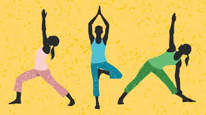

Yoga-Journal : Today's need
Yoga as exercise is a physical activity consisting mainly of postures, often connected by flowing sequences, sometimes accompanied by breathing exercises, and frequently ending with relaxation lying down or meditation. Yoga in this form has become familiar across the world, especially in the US and Europe. It is derived from medieval Haṭha yoga, which made use of similar postures, but it is generally simply called "yoga". Academics have given yoga as exercise a variety of names, including modern postural yoga[1][a] and transnational anglophone yoga.[3]

For the use of yoga in exercise, see Yoga as exercise. For the use of yoga as therapy, see Yoga as therapy. For the ancient Indian philosophy, see Yoga (philosophy). For other uses, see Yoga (disambiguation).Yoga-like practices were first mentioned in the ancient Hindu text known as Rigveda.[7] Yoga is referred to in a number of the Upanishads.[8][9][10] The first known appearance of the word "yoga" with the same meaning as the modern term is in the Katha Upanishad,[11][12] which was probably composed between the fifth and third centuries BCE.[13][14] Yoga continued to develop as a systematic study and practice during the fifth and sixth centuries BCE in ancient India's ascetic and Śramaṇa movements.[15] The most comprehensive text on yoga, the Yoga Sutras of Patanjali, date to the early centuries of the Common Era;[16][17][note 1] Yoga philosophy became known as one of the six orthodox philosophical schools (Darśanas) of Hinduism in the second half of the first millennium CE.[18][web 1] Hatha yoga texts began to emerge between the ninth and 11th centuries, originating in tantra.[19][20]
āsana (Sanskrit: आसन) is a body posture, originally and still a general term for a sitting meditation pose,[1] and later extended in hatha yoga and modern yoga as exercise, to any type of position, adding reclining, standing, inverted, twisting, and balancing poses. The Yoga Sutras of Patanjali define "asana" as "[a position that] is steady and comfortable".[2] Patanjali mentions the ability to sit for extended periods as one of the eight limbs of his system.[2] Asanas are also called yoga poses or yoga postures in English.
Two general theories exist on the origins of yoga. The linear model holds that yoga originated in the Vedic period, as reflected in the Vedic textual corpus, and influenced Buddhism; according to author Edward Fitzpatrick Crangle, this model is mainly supported by Hindu scholars. According to the synthesis model, yoga is a synthesis of non-Vedic and Vedic elements; this model is favoured in Western scholarship.[21][22]
According to Knut A. Jacobsen, yoga has five principal meanings:[56]
1] A disciplined method for attaining a goal
2] Techniques of controlling the body and mind
3] A name of a school or system of philosophy (darśana)
4] With prefixes such as "hatha-, mantra-, and laya-, traditions specialising in particular yoga techniques
5] The goal of yoga practice[57]
The postural yoga of the Western world is a physical activity consisting of asanas often connected by smooth transitions, sometimes accompanied by breathing exercises and usually ending with a period of relaxation or meditation. It is often known simply as "yoga",[235] despite older Hindu traditions (some dating to the Yoga Sutras) in which asanas played little or no part; asanas were not central to any tradition.[236]